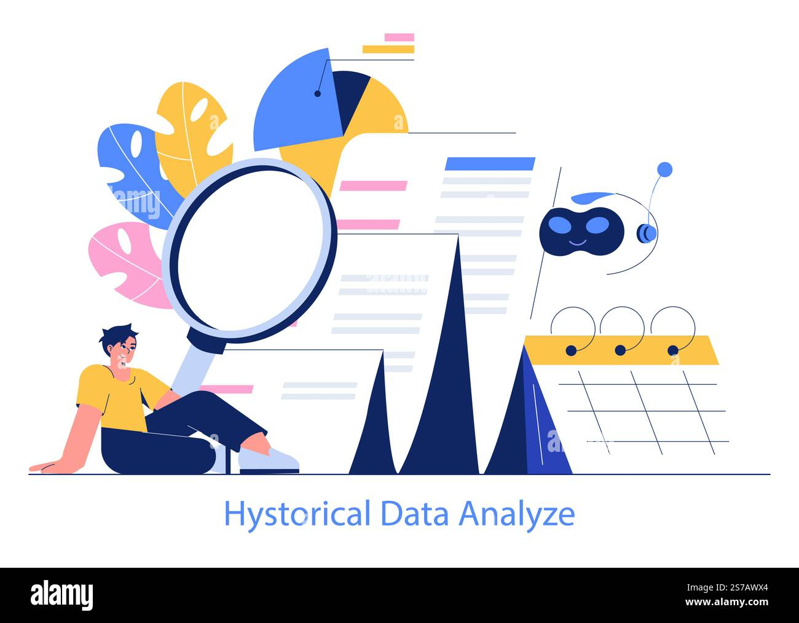
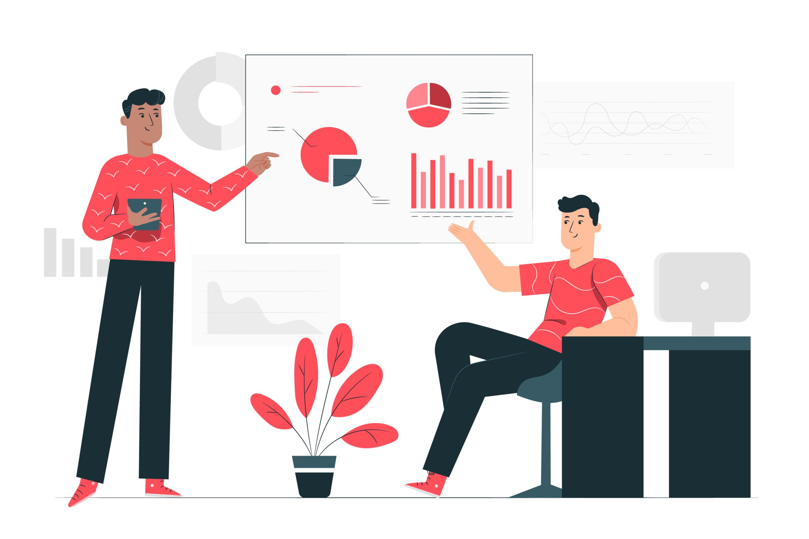
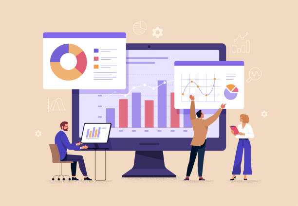

Hello, I'm Yaw Assensoh Opoku Data Analyst & Former Logistics Entrepreneur
I translate complex data into actionable business insights. With hands-on experience in operations and logistics, I bridge the gap between technical analysis and real-world business impact.

Featured Case Studies
Data-Driven Business Impact
Selected projects demonstrating how I transform complex data into actionable business strategies and measurable outcomes.

NYC Citi Bike Supply Optimization
Developed demand forecasting model with 0.82 temperature-usage correlation to optimize bike distribution across 1,500+ stations, reducing operational costs while improving customer satisfaction.
Instacart Market Basket Analysis
Customer segmentation and product association analysis that identified 12 high-probability product pairs, enabling targeted marketing and strategic bundling to increase average order value.

Financial Markets Intelligence Platform
Quantitative analysis of technology stocks delivering 243% average returns vs. 100% SPY benchmark, with risk-adjusted portfolio optimization and momentum-based allocation strategies.

Influenza Staffing Forecast Model
ARIMA-based predictive model with 89% accuracy for 4-week influenza forecasts, enabling optimized hospital staffing and resource allocation during peak seasons.
My Professional Journey
From Logistics Operations to Data Insights
For years, I owned and operated a logistics business in Hamburg, where every decision—from route optimization and dispatch planning to customer segmentation—depended on understanding complex operational data. I wasn't just analyzing numbers; I was using them to make real-time decisions that directly impacted revenue, efficiency, and customer satisfaction.
This hands-on entrepreneurial experience taught me that data isn't just about finding patterns—it's about solving practical business problems. When I discovered I could formalize these skills through data analytics, it wasn't a career change; it was a natural evolution. I've simply added Python, SQL, and Tableau to the toolkit I'd been developing for years.
Proven Business Impact:
What Makes My Approach Unique:
- Business-First Mindset: I start with "What problem are we solving?" not just "What does the data show?"
- Entrepreneurial Perspective: Having run a business, I understand how insights translate to revenue and customer satisfaction
- Operational Experience: Years in logistics mean I understand process optimization from the ground up
- Communication Bridge: I excel at translating technical findings into actionable business recommendations
- Multilingual Advantage: Fluent in 5 languages (English, German, Italian, Spanish, French), I bring cultural awareness to global data challenges
Today, I combine my operational expertise with advanced analytical skills to help organizations make smarter, data-driven decisions. Whether it's optimizing supply chains, predicting customer behavior, or uncovering revenue opportunities, I bring a practical, results-oriented approach to every project.
Portfolio
My Analysis Projects
Explore my data analysis projects showcasing insights, visualizations and data-driven solutions.
-

Comprehensive Data Analysis & Forecasting
Global Migration Analysis
View Project -

Quantitative Finance & Risk Analysis
Financial Markets Intelligence
View Project -

Supply Chain Optimization
NYC Citi Bike Analysis
View Project -

Network Science & NLP
20th Century Geopolitical Analysis
View Project -

Market Basket Analysis
Instacart Analysis
View Project -

Business Intelligence
RockBuster Insights
View Project -

Economic Data Analysis
Global Development Trends
View Project -

Healthcare Analytics
Influenza Staffing Forecast
View Project
My Skills
My Technical Skills
Data made simple, from data to decisions
-
Jupyter Notebook
100% -
PostgreSQL
100% -
Tableau
100% -
Python
100% -
SQL
100% -
Microsoft Excel
100% -
Statistics Analysis
100% -
Data Storytelling
100% -
A/B Testing
100%
"Turning numbers into action"
Get In Touch
Ready to turn data into insights? Let's discuss how analytics can solve your business challenges.
Email Me DirectlyI'll respond within 24 hours
-
Location
Hamburg, Germany -
Phone
+49 15738065664